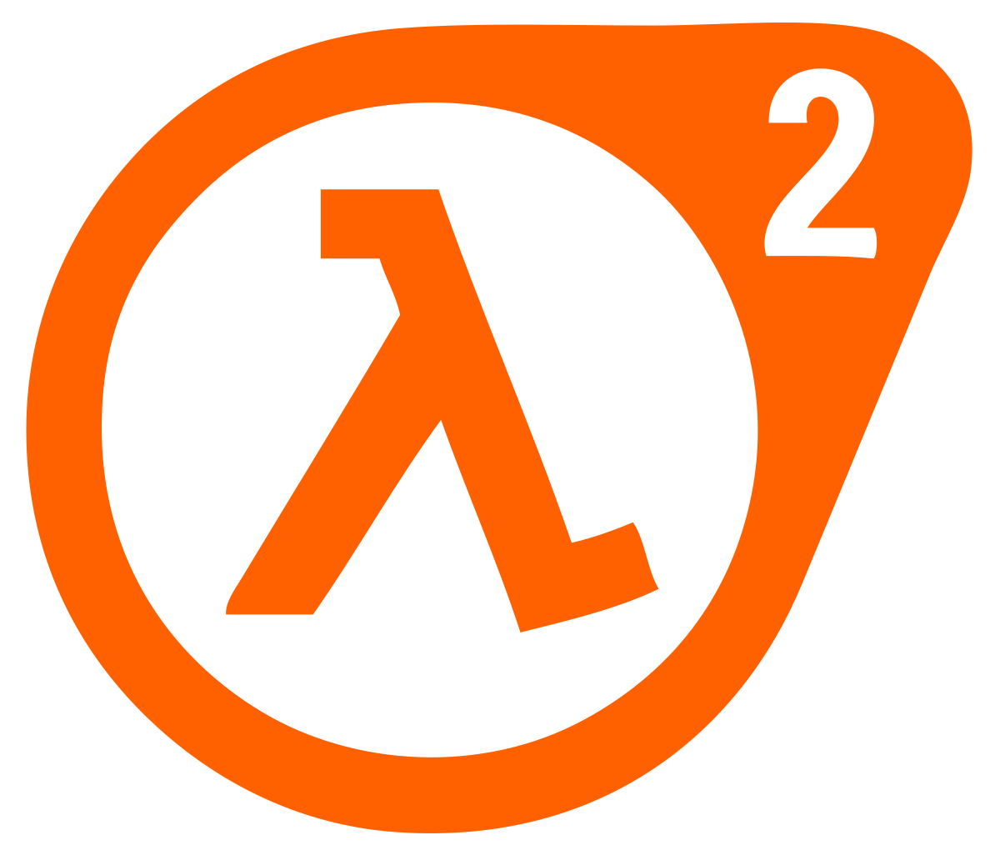

| B4 Juegos | |||
| PlaceHolder | Valve | Indice | |

|
Portal 1 (2007) | Portal 2 (2011) |
|
 El juego consta principalmente de una serie de rompecabezas que deben ser resueltos teletransportando al personaje y objetos simples usando el «Aperture Science Handheld Portal Device», un dispositivo que puede crear portales interespaciales entre dos superficies planas. El personaje, Chell, es desafiada por una inteligencia artificial llamada GLaDOS (Genetic Lifeform and Disk Operating System) para completar cada puzzle en el Aperture Science Enrichment Center usando la pistola de portales, con la promesa de recibir una tarta cuando complete todos los rompecabezas. |
 Si no tenias suficiente con el primer titulo, aqui tienes el segundo que es la continuacion de este maravilloso titulo. Portal 2, comienza 50 dias despues de la criogenizacion de Chell, nuestra protagonista en este titulo tambien. En este titulo hay muchas mas mecanicas interesantes como en el anterior titulo, gracias a la pistola de portales y las superficies para portales y las fisicas unicas del juego hacen q los puzzles sean un reto entretenido y agradable. Sin duda si disfrutaste del primer titulo este te va a dejar con ganas del tercer titulo. |
||
| Half-Life (2002) | Half-Life 2 (2004) | ||
 Half-Life narra las aventuras de Gordon Freeman, un científico teórico del Laboratorio de Materiales Anómalos del Centro de Investigación Black Mesa, un enorme complejo científico subterráneo y ultra secreto instalado en una base militar en desuso emplazada en el desierto de Nuevo México. Este lugar tiene muchas similitudes con el Laboratorio Nacional de Los Álamos y el Área 51. El juego original estaba inspirado por videojuegos como Doom, Quake, Resident Evil, la novela La niebla de Stephen King y un episodio de The Outer Limits llamado The Borderland. Más tarde fue desarrollado por el escritor y autor Marc Laidlaw, quien escribió los libros Dad's Nuke y The 37th Mandala. |
 La historia del juego transcurre, aproximadamente, 20 años después de Half-Life. Gordon Freeman aceptó trabajar para G-Man tras derrotar a Nihilanth, tras lo cual fue puesto en un estado de hibernación, donde ha quedado congelado en el tiempo. Se creía que la destrucción de Nihilanth acabaría con la Tormenta de Portales, pero no fue así. Su muerte creó una nueva e inestable tormenta de portales que se extendió por todo el mundo, transportando a gran parte de las criaturas de Xen a la Tierra. Los Xenianos habían sido anteriormente conquistados por otra raza alienígena llamada La Alianza. |
||
| Bungie Studios | |||
| Halo: Combat Evolved (2001) | Halo: Reach (2010) | ||
|
Halo: Combat Evolved, comúnmente conocido como Halo o Halo 1, es un videojuego de disparos en primera persona desarrollado por Bungie Studios y publicado por Microsoft Game Studios el 15 de noviembre de 2001, a manera de título debut de la videoconsola Xbox,1 y de la cual es considerado como su aplicación asesina.7 Es el primer juego de la franquicia Halo. |
Halo Reach es un videojuego de disparos en primera persona desarrollado por Bungie y publicado por Microsoft Game Studios para la consola Xbox 360 y posteriormente retrocompatible con Xbox One (exclusivo de Microsoft para estas dos 2 consolas). Es el sexto videojuego de la saga Halo, así como su tercer videojuego Publicado. Fue anunciado por primera vez el 2009 en Spike Video Game Awards. |
||
| CAPCOM | |||
| Monster Hunter: World (2017) | Devil May Cry 5 (2019) | ||
|
Monster Hunter: World es un videojuego perteneciente al género de rol y acción, desarrollado y publicado por la empresa Capcom, siendo el sexto título principal de la franquicia de videojuegos Monster Hunter. El juego fue anunciado en la conferencia de Sony en la E3 2017.2 Su lanzamiento mundial se produjo el 26 de enero de 2018 en las consolas PlayStation 4 y Xbox One; mientras que su fecha de salida para Microsoft Windows fue el 9 de agosto de 2018. |
 Devil May Cry 5 es un videojuego perteneciente al género hack and slash, desarrollado y publicado por la empresa Capcom. Fue lanzado el 8 de marzo de 2019, para las plataformas PlayStation 4, Xbox One y Microsoft Windows.4 Es la quinta entrega de la serie Devil May Cry, y la primera entrega principal desde el lanzamiento de Devil May Cry 4 del año 2008. El juego contará con Dante y Nero como personajes jugables, junto a V, un misterioso nuevo cliente que llega a las oficinas de Devil May Cry.5 Devil May Cry 5 recibió una recepción positiva de parte de la crítica especializada y el público. |
||
| Blizzard | |||
| Overwatch (2016) | World of Warcraft (1994) | ||
 Overwatch pone a los jugadores en equipos de seis personas, con cada persona escogiendo uno de varios héroes disponibles, cada uno con movimientos y habilidades únicas. Los héroes están divididos en tres clases: Daño, Tanque y Apoyo. Los jugadores de cada equipo trabajan juntos para atacar y defender puntos de control o para atacar/defender "cargas" (objetivos móviles que se mueven alrededor del mapa). Al terminar la partida los jugadores acumulan puntos, que les otorgan recompensas estéticas que no afectan el desempeño de juego. |
World of Warcraft (abreviado como WoW, literalmente en español Mundo de Warcraft) es un videojuego de rol multijugador masivo en línea desarrollado por Blizzard Entertainment. Es el cuarto juego lanzado establecido en el universo fantástico de Warcraft, el cual fue introducido por primera vez por Warcraft: Orcs & Humans en 1994 World of Warcraft transcurre dentro del mundo de Azeroth, cuatro años después de los sucesos finales de la anterior entrega de Warcraft, Warcraft III: The Frozen Throne Blizzard Entertainment anunció World of Warcraft el 2 de septiembre de 2001 |
||